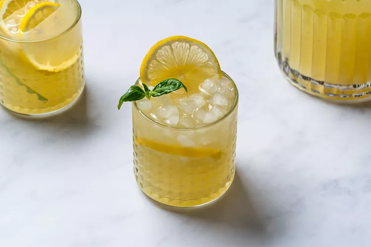

Home
Basil Lemonade

Whether you're an avid gardener or have a black thumb, one thing is for sure, summer is bursting with
fresh basil. Often thought of as a savory herb, this bright green, aromatic addition can actually be used
in sweet applications as well. For example, Strawberry Basil Sorbet, Basil Rosemary Orange Shandy, and this
delicious lemonade.
This basil lemonade recipe is the perfect canvas for a boozy treat. Try adding a splash of bourbon, vodka, or
gin. You could even set up your own spiked lemonade bar at a backyard barbecue for guests to pick and choose
how they prefer their refreshing treat. Add extra citrus—like limes, oranges, or grapefruit, or whole fruits
like strawberries, peaches, or pineapple.
Ingredients
- 1 cup granulated sugar
- 1 cup firmly packed basil leaves, plus optional leaves for garnish
- 1 tablespoon finely grated lemon zest (from 1 to 2 lemons)
- 6 cups water, divided
- 1 1/4 cups freshly squeezed lemon juice (from about 5 lemons)
- 4 to 6 slices lemon, for garnish
Steps
- Gather the ingredients.
- In a medium saucepan, muddle the sugar, basil, and lemon zest until the flavors are released, about one minute.
- Add 2 cups of water. Bring to a boil over high heat, stirring frequently. Once it comes to a boil, remove from heat and let cool to room temperature, about 30 minutes.
- Strain the mixture into a large pitcher. Add the remaining 4 cups of cold water and lemon juice. Stir well.
- Serve over ice and garnish with fresh basil and lemon slices.